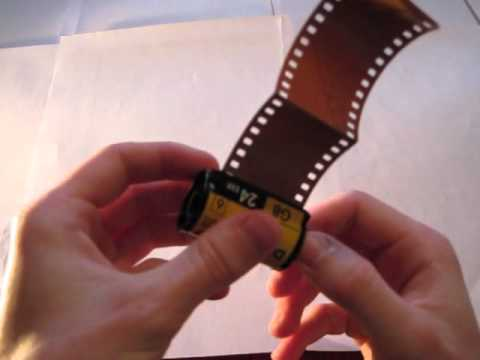

Как вынуть плёнку из фотоаппарата: владельцам мыльниц
Многоразовые (перезаряжаемые) плёночные мыльницы разрабатывают таким образом, чтобы
зарядить и вынуть плёнку было просто. И чтобы засветов плёнки не случалось.
Как плёнка мотается в фотоаппарате
Чтобы у вас на финише (когда отснят последний кадр и пора вынимать ролик из фотоаппарата)
не было проблем, нужно знать как работает ваша камера.
Плёночные мыльницы бывают двух видов:
1. камера при заряжании цепляет кончик плёнки на приёмную катушку и с каждым кадром
наматывает на приёмную катушку отснятый материал, вытягивая свежую плёнку из
заряженного ролика с плёнкой;
2. камера при заряжании полностью сматывает всю плёнку из фирменного
светонепроницаемого ролика на приёмную катушку и потом по кадру сматывает отснятый
материал обратно в ролик
Владельцы плёночных фотоаппаратов редко читают инструкции. Поэтому определяем тип
вашей камеры при заряжании плёнки. Вставили плёнку, захлопнули крышку плёночного отсека,
включили камеру (нажали спуск). В этот момент вы услышите звук мотора. Если он
кратковременный (намотал кончик на приёмную катушку), то у вас первый тип камер.
Если мотор работал долго (несколько секунд), то у вас камера второго типа.
Зачем вам это знать? Потому что если ваша камера сначала вытянула всю плёнку на приёмную
катушку и потом с каждым нажатием спуска сматывает отснятую плёнку обратно в ролик, то на
последнем кадре камера всё смотает обратно и ваш материал будет в безопасности, даже если
вы вдруг(!) откроете крышку плёночного отсека.
А вот если ваша камера закончит снимать и вся экспонированная плёнка на финише будет на
приёмной катушке (а не в светонепроницаемом ролике), то открыв крышку плёночного отсека
вы засветите всю плёнку.
Поэтому зарядив плёнку, слушайте как долго ваша камера жужжит.
Как правило, в обоих типах камер после последнего отснятого кадра плёнка сама
автоматически сматывается (доматывается) в ролик. Вы услышите, что камера жужжит дольше
обычного. Это значит, что плёнка кончилась. Можно вынимать плёнку из камеры.
Это безопасно.
Исключением являются очень старые мыльницы, где нет мотора. Там кадры перематываются
колесом, а сматывается плёнка специальной ручечкой. Но такую древнюю технику я уже не
вижу и не будем о ней!
Кнопка принудительной смотки плёнки
В стародавние времена, когда фотоплёнки в природе было как грязи и она почти ничего не
стоила, легко можно было представить себе ситуацию, когда вы зарядили в камеру 36 кадров,
отсняли 5 важных сцен и вам больше не нужно ничего снимать. Чтобы покончить с плёнкой
разом на камерах есть кнопка принудительной смотки плёнки. Она обычно находится на
тыльной (или нижней) стороне камеры и утоплена в корпус, чтобы её нельзя было нажать случайно.
Если вы намерены отснять плёнку целиком, не нажимайте эту кнопку!
Не открывайте крышку отсека плёнки
В моей практике были случаи, когда фотографы после нескольких кадров желали убедиться,
что камера работает (плёнка не бракованная и прочее), открывали крышку плёночного отсека и
любовались на засвеченную плёнку. Не делайте так! Вы ничего не увидите там. Негативы
получаются после проявки плёнки в темноте и специальной химии. В плёночной фотографии
нельзя увидеть промежуточный результат. Такая возможность есть в Polaroid.
Как достать кончик плёнки
Внимание! Вы не сможете достать зарядный кончик, разворотив приёмное гнездо отверткой
или ножом. Вы засветите плёнку. Такие случаи у меня были.
Были в моей практике и случаи, когда кончик плёнки пытались извлечь уже у отснятой плёнки.
И засветили её. Но зачем? Для проявки не нужен кончик. При проявке ролик вскрывается в
темноте и плёнка вынимается целиком, а не вытягивается за кончик.